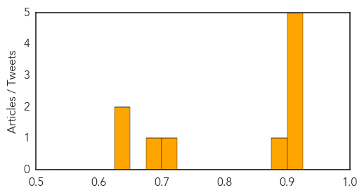
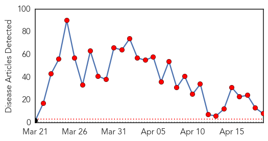

Measles
30-Day Web Trend
3 alerts, 4 warnings
30-Day Twitter Trend
0 alerts, 0 warnings

Article Locations

Article Confidences
Top Articles:
- 0.919
- Parents rush to get babies vaccinated for measles
- 0.913
- Passengers on Vancouver-to-Edmonton flight warned to watch out for measles
- 0.910
- Passengers on Vancouver-to-Edmonton flight warned to watch out for measles
- 0.908
- Passengers on Vancouver-to-Edmonton flight warned to watch out for measles
- 0.902
- Passengers on flight warned about measles
- 0.893
- The Kid’s Doctor: Measles outbreak points to importance of vaccines
- 0.722
- New measles case comes from child travelling to Edmonton
- 0.688
- Potential measles exposure locations released
- 0.632
- Don't let parents opt out of 'mandatory' vaccinations
- 0.626
- 2nd measles case confirmed in Edmonton area
Top Tweets:
-
No tweets found for Apr 19, 2014
Ebola
30-Day Web Trend
29 alerts, 0 warnings

30-Day Twitter Trend
9 alerts, 0 warnings

Article Locations

Article Confidences

Top Articles:
- 1.000
- The Trinidad Guardian Newspaper
- 1.000
- Ebola virus circulating in Guinea is new strain
- 1.000
- Guinea says few new Ebola cases, outbreak nearly under control
- 1.000
- UPDATE 1-West African Ebola outbreak caused by new strain of disease - study
- 0.998
- Ebola Virus in Africa Outbreak is a New Strain
- 0.998
- UPDATE 1-West African Ebola outbreak caused by new strain of disease - study
- 0.997
- Kenya : Mob attacks Ebola treatment centre in Guinea, suspected cases reach Mali
- 0.959
- Ebola virus in Guinea is new strain
Top Tweets:
-
No tweets found for Apr 19, 2014